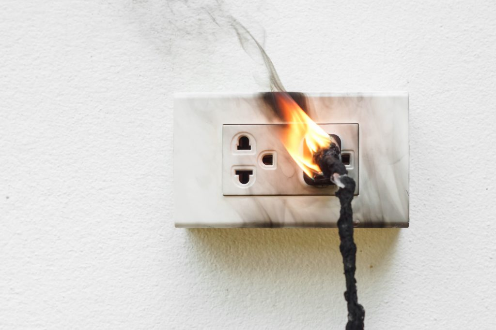

Last week - The electric box
Last week, a student at TUES reported that an electric box in the school's courtyard had been tampered with. The box was found to be damaged, and there were signs of forced entry. One student claimed that they had seen someone suspicious near the box earlier that day. The school administration has launched an investigation into the matter and has increased security measures around the area. This incident has raised concerns among students and parents about the safety of the school premises.

The school has advised students to report any suspicious activity they may witness and has assured them that they are taking the necessary steps to ensure their safety. Investigation is ongoing, and the school has promised to keep the community informed about any developments in the case. The incident has sparked a lot of discussion among students and parents, with some expressing their concerns about the security of the school and others praising the school's response to the situation. The school has also reminded students to be vigilant and to report any concerns they may have to the authorities.
The electric box is an important part of the school's infrastructure, and it is used to power various devices and equipment around the school. The damage to the box has caused some disruptions in the school's operations, and the school is working to repair it as soon as possible. The school has also assured students that they are taking steps to prevent similar incidents from happening in the future, including increasing security measures and conducting regular inspections of the school's facilities.
Just 2 days later, the school announced that they had identified the person responsible for tampering with the electric box. The individual was a student at the school who had been acting out of boredom and curiosity. The student has been disciplined by the school and has been required to participate in community service as a consequence of their actions.
The student responsible has suffered second degree burns from the electrical current. Support has been provided to the student and their family, and the school has offered counseling services to help them cope with the incident. The school has also taken steps to ensure that the student receives the necessary medical care and support during their recovery. This incident has served as a reminder of the dangers of tampering with electrical equipment and the importance of following safety protocols.
While the electrical box was fixed, the time it took to repair it caused some inconvenience for students and staff. It caused a power outage in some areas of the school, which affected the use of certain devices and equipment. The school has assured everyone that they are doing everything they can to minimize disruptions and ensure that the school continues to operate smoothly.
On another topic, in the programming class, there was a loose outlet that caused a small fire when a student accidentally plugged in a device that was not compatible with the outlet. The fire was quickly extinguished, and no one was injured in the incident. The school has since repaired the outlet and has reminded students to be cautious when using electrical devices and to report any issues with electrical equipment to the authorities immediately.

The school has also taken steps to educate students about electrical safety and the importance of following safety protocols when using electrical equipment. They have provided training sessions and resources to help students understand the risks associated with electrical devices and how to use them safely. The school has emphasized the importance of being responsible when using electrical equipment and has encouraged students to report any concerns they may have about electrical safety to the authorities.